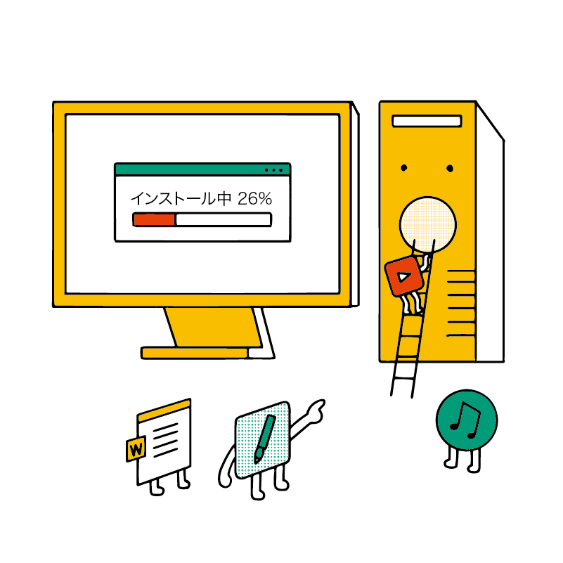
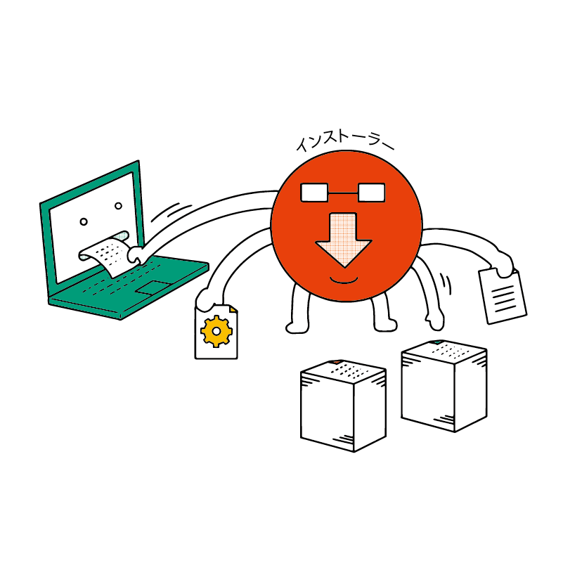
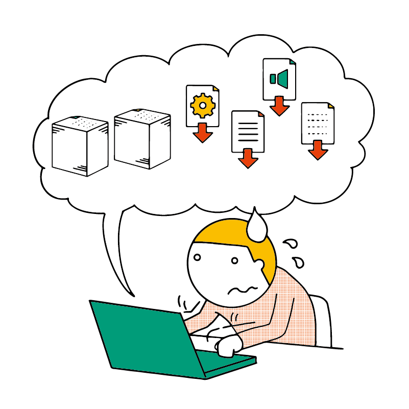

アプリのインストール・アンインストール
今回はパソコンにおけるアプリのインストールとアンインストールについて学びましょう。
そもそも「インストール」とは？
皆さんの中には、スマホで何かのアプリをインストールした経験がある人もいるでしょう。また、そうでなくても「アプリを入れる」「アプリをインストールする」という言葉を聞いたことがある人は多いはずです。
そもそも、インストールとは何なのでしょうか。
「インストール」は新しいアプリをパソコンに導入するという意味です。
元々、インストール（install）には英語で「装置などを取り付ける」という意味があります。ここまで学んできたように、「デスクトップ（机の上）」「ウィンドウ（窓）」などのようにパソコンの用語は実際のモノに由来するものが多く、インストールもその一つと言えるでしょう。
アプリは複数のファイルが集まって動いています。中には数百個・数千個といったファイルで構成されているアプリもあります。
こういったファイルをパソコンの中に正しくコピーした上で、パソコン（Mac）にアプリとして登録して利用できるようにする作業こそがインストールなのです。
インストール手順の種類
どの手順でインストールするかはアプリによって異なります。
インストーラーを使うもの
パソコンにおけるインストールの手順として最も基本的なのは インストーラー（インストールウィザード） という、インストールをするためのツールを使うものです。
インストーラーはアプリの配布サイトからダウンロードできるものもありますし、USB メモリや DVD などの形式で購入する場合もあります（アプリによって異なります）。
インストーラーは先程学んだような「アプリに必要なファイルのダウンロードやコピー」「Mac への登録作業」などを行ってくれます。
アプリによってインストーラーの見た目や操作手順は異なります。
アプリストアから行うもの
近年はスマホと同様に、アプリストアからもパソコンにアプリをインストールできます。Mac では iPhone と同様の App Store（アップ・ストア）が使えます。
これも内部的にはインストーラーが動いているのですが、ワンクリックでインストールできるので初心者にも分かりやすくなっています。
一方、インストール時に細かい設定ができないといったデメリットもあります。
Mac や iPhone でアプリを入手できるストアは App Store（アップ・ストア）です。日本語で「アプリケーション」を略して「アプリ」と呼びますが、英語は application を 略すると app（アップ）となります。
一方、実世界でアップル社が運営している店舗は Apple Store（アップル・ストア）です。
どちらもアップル社が運営しているものでちょっと紛らわしいですが、アプリの入手は App Store、Mac や iPhone の購入は Apple Store と覚えておくとよいでしょう。
手動で行うもの
インストーラーを使わず、手動で必要なファイルをパソコンにコピーすることでインストールするアプリもあります。
コピー以外にも難しい設定が必要になる場合があり、やや上級者向けといえるでしょう。
アンインストール
アンインストール（uninstall）はインストールの逆で、削除を意味します（英語で「アン」を単語の先頭につけることで、ハッピーとアンハッピーのように、逆の意味の言葉になります）。
//TODO Mac でのアンインストール手順